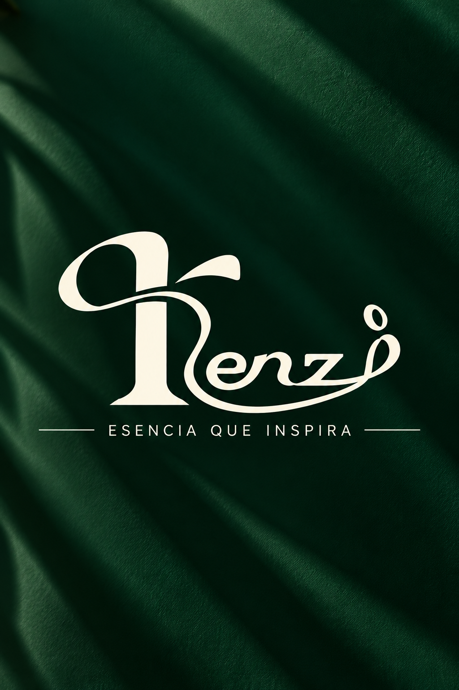
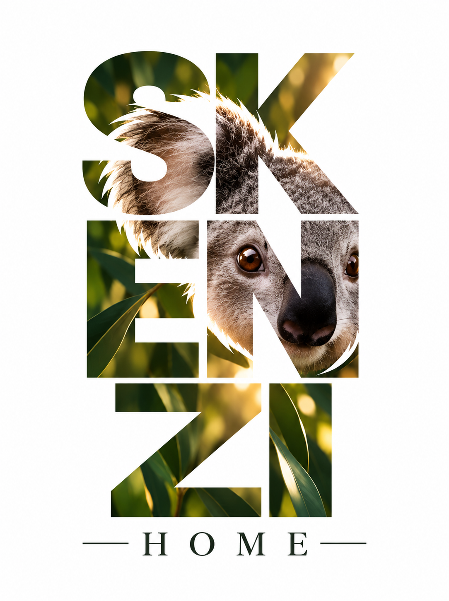

Una marca que creció durante 11 años, evolucionando desde una pequeña papelería de barrio hacia una nueva etapa con productos, servicios y presencia digital.
SKENZI nació hace 11 años como una pequeña papelería de barrio. Con el tiempo, el negocio creció, incorporó nuevos productos y servicios y abrió una nueva línea de productos para el hogar con presencia en Internet.

La marca había evolucionado, pero su identidad visual necesitaba acompañar esa nueva etapa. El desafío era modernizar su imagen sin perder la esencia y la historia construida durante estos años.
Renovamos la identidad visual de SKENZI para acompañar el crecimiento de la marca, modernizando su imagen y comunicación sin perder aquello que la hacía reconocible.
La nueva identidad visual de SKENZI acompaña el crecimiento de la marca, conservando elementos que hacen parte de su reconocimiento y llevándolos a una expresión más actual, clara y coherente.
Una paleta pensada para transmitir estabilidad, cercanía, calidez y confianza, construyendo una percepción más moderna y coherente para la marca.
La tipografía principal aporta elegancia, carácter y reconocimiento, mientras que la tipografía secundaria complementa la comunicación con una expresión limpia, actual y funcional.
Una marca preparada para una nueva etapa.
Una identidad que mantiene la conexión con su historia.
Una imagen más sólida y coherente.
Una expresión visual preparada para nuevos espacios.


La evolución de la marca también abrió una nueva línea de negocio: productos para el hogar vendidos por Internet, llevando la propuesta de SKENZI a nuevos espacios y fortaleciendo su presencia digital.

Hoy, la nueva identidad acompaña a SKENZI en sus diferentes puntos de contacto, desde su presencia digital hasta la presentación de sus productos.